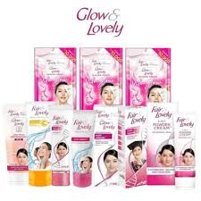

SUNSCREEN
Rilis, Sep, 19, 2011
Sunscreen Fair and lovely merupakan merek kosmetik dan skincare lokal Indonesia yang populer di kalangan remaja dan wanita muda. Produk-produk Fair and lovely dikenal dengan harga yang terjangkau, tekstur ringan, dan manfaat yang beragam, seperti mencerahkan kulit, melembapkan, dan melindungi dari sinar matahari.
FAKE WASH
Rilis, Sep 9, 2011

Sabun pembersih wajah yang dirancang untuk mengangkat kotoran, minyak, dan sisa makeup dari kulit wajah, serta membantu mencerahkan dan menjaga kelembaban alami kulit.
About Me
Fair and Lovely adalah merek perawatan kulit wajah yang populer, terutama di India, yang dikenal dengan produk pencerah wajah. Merek ini awalnya menawarkan krim pemutih wajah yang kemudian dikembangkan menjadi berbagai produk perawatan kulit..
Populer Post
Follow Me
@jeonjuw_